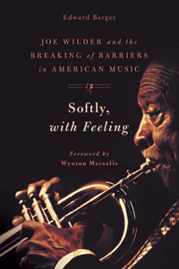

<body bgcolor="#FFFFFF" text="#000000" link="#0000FF" vlink="#CC0000" alink="#CC0000"><center><hr width="350" size="1" align="center" noshade>The story of Joe Wilder, who broke musical and racial barriers<hr width="350" size="1" align="center" noshade><p><a href="https://cdcshoppingcart.uchicago.edu/Cart/ChicagoBook.aspx?ISBN=9781439911273&&PRESS=temple" target="_top">Buy this book!</a> | <a href="https://cdcshoppingcart.uchicago.edu/Cart/Cart.aspx?PRESS=temple" target="_top">View Cart</a> | <a href="https://cdcshoppingcart.uchicago.edu/Cart/Cart.aspx?PRESS=temple" target="_top">Check Out</a></p><p></p></center><!--none//--><h1>Softly, with Feeling</h1>
<H2>Joe Wilder and the Breaking of Barriers in American Music</H2>
<H2>Foreword by Wynton Marsalis</H2>
<h3>Edward Berger</h3>
<P>cloth 1-4399-1127-4 $35.00, Apr 14, <FONT COLOR=#990033>Available</FONT>
<br>Electronic Book 1-4399-1129-0 $35.00 <FONT COLOR=#990033>Available</FONT>
<BR> 400 pp
6x9
1&nbsp;table 35&nbsp;halftones
</P><h3 align="center"><P><font color="#996633">Association for Recorded Sound Collections' Award for Excellence in the category of Best Historical Research in Recorded Jazz,
2015</font></P>
</H3>
<BLOCKQUOTE><I>"You hear a brilliant and concise trumpet solo in the most unlikely of places, on a '50s cast album or vocal date, and it happens so often you gradually stop being surprised to find you've just heard Joe Wilder. He’s been everywhere in music over the last 60-plus years, and in </i>Softly, with Feeling<i>, Ed Berger has given this exemplary figure (a self-effacing racial pioneer as well as an impeccable musician) the exemplary biography he deserves."</i><br>&#151<b>Francis Davis</b>, author of <i>Jazz and Its Discontents: A Francis Davis Reader</i></I></BLOCKQUOTE>
<P>Trumpeter Joe Wilder is distinguished for his achievements in both the jazz and classical worlds. He was a founding member of the Symphony of the New World, where he played first trumpet, and he performed as lead trumpet and soloist with Lionel Hampton, Jimmy Lunceford, Dizzy Gillespie, and Count Basie. Yet Wilder is also known as a pioneer who broke down racial barriers, the first African American to hold a principal chair in a Broadway show orchestra, and one of the first African Americans to join a network studio orchestra.
<P>In <I>Softly, with Feeling</I>, Edward Berger tells Wilder's remarkable story from his youth in working-class Philadelphia and his apprenticeship in the big bands, to his experience as one of the first 1,000 black Marines during World War II, and his achievements in the worlds of jazz, classical, and popular music. Reminiscences by Wilder and his colleagues, including renowned Philadelphia-area musicians Jimmy Heath and Buddy DeFranco help place Wilder's experiences within a broader context of American musical and social history.
<P>Wilder's modesty and ability to perform in many musical genres may have prevented him from achieving popular recognition, but in <I>Softly, with Feeling,</I> his legacy and contributions to music and culture are assured.
<BR>&nbsp;<h2>Excerpt</h2><P>Excerpt available at <a href="http://www.temple.edu/tempress">www.temple.edu/tempress</a></p>
<BR>&nbsp;<h2>Reviews</h2>
<p><i>"</i>Softly, with Feeling<i> is a major contribution to the literature of jazz, and the history of race relations in twentieth-century America. Berger sheds light on many infrequently examined aspects of the music world: not just jazz, but classical, radio, TV, recording and Broadway, education, and even the military. The overused word ‘unique’ does apply to Joe Wilder’s remarkable life and multi-faceted career. It has been described here in all its fascinating detail and with first-rate research and interviews. The strength of </i>Softly, with Feeling<i> is in the way it reflects, step by step, the talent, determination and strength of character of Joe Wilder, a truly admirable human being."</i> <br>&#151<b>Dan Morgenstern</b>, retired Director of the Institute of Jazz Studies at Rutgers University-Newark, and author of <i>Living with Jazz</i>
<p><i>"Writer/photographer Berger's approach in this biography encompasses not only Wilder's career, but also offers a vivid and well-researched depiction of both jazz and Broadway orchestras and a picture of the unheralded musician that is fascinating reading.... Berger's highly readable account is clearly an overdue testament to the performer's skills and accomplishments. VERDICT: [T]his wonderful book should be read by anyone interested in jazz or classical music; it belongs in every library."</i><br>&#151<b><i> Library Journal</i></b>
<p><i>"Berger realized that Wilder had an important story to tell, and the result is a superb biography, </i>Softly, With Feeling<i>, which contrasts Wilder’s enormous breakthroughs and his humble demeanor.... There’s little doubt that Berger’s elegantly-written biography will raise awareness of this important but underappreciated jazz giant."</i> <br>&#151<b><i>Jazz History Online</i></b>
<p><i>"The new and aptly titled biography by Edward Berger embodies Wilder's deep gentle spirit...Berger's writing is worthy of his subject. The biography makes one feel as if Wilder is close at hand, fully realized. Berger's research is superb but never obtrusive; his prose is understated yet effective. The book offers rare photographs...and a discography full of surprises. Joe Wilder has been wonderfully captured in these pages, a loving, accurate portrait."</i> <br>&#151<b><i>The New York City Jazz Record</i></b>
<p><i>"Joe gives a lucid account of the techniques of playing in a big band, notably the first trumpet role.... Berger's annotation is meticulous and there is a good discography - you'll be amazed at the range of Wilder's participations.... Berger is a distinguished writer.... He is a most assiduous researcher and writes with impressive style and fluency. ln Joe Wilder he has laid claim to an outstanding career that needed documenting. Joe's superb memory gives him great riches, and Berger has produced one of the most absorbing books on jazz for some time."</i> <br>&#151<b><i>Jazz Journal</i></b>
<p><i>"Berger does an exceptional job of presenting Wilder's life story in a way that gives a clear picture of Wilder as a man and musician, and does do by placing his life in the sociological context that lends a deep understanding of the factors that influenced how his journey evolved.... Berger has done a magnificent job.... This work will stand among the best of jazz biographies."</i> <br>&#151<b><i>Jersey Jazz</i></b>
<p><i>"Edward Berger atones for what he sees as America's failure to fully recognize the trumpeter's talents with a full-scale biography of the kind we don't often get--that of an unfamous person. lt reminds us that fame comes with long odds attached, but that the music profession offers many midlevel tiers in which a great player can sustain a rewarding career for decades without dealing with autograph hounds.... Berger interviewed his subject at great length, permitting Wilder to tell much of his own story. His candidness is refreshing.... ln Berger's account...musicianship and character exist in an intimate symbiosis."</i><br>&#151<b><i>Downbeat</i></b>
<p><i>"</i>Softly, With Feeling<i> by author/photographer Edward Berger, is an excellent, well-written biography of a pioneer who was an unsung and unheralded hero in the musical world....This is a scholarly, well-detailed, book, with a thoughtful foreword written by trumpeter Wynton Marsalis, and revealing quotations from Wilder’s friends, fellow musicians, Jimmy Heath and Buddy DeFranco, and from Mr. Wilder years before his death."</i><br>&#151<b><i>JazzCorner</i></b>
<p><i>"The book gives good insight into a musician's life in New York City in the heyday of jobs mostly in the 1950's and 1960's...It is one of the best biographies of a jazz musician....in fact, more than a jazz musician's biography, it is a total musician's biography."</i> <br>&#151<b><i>International Association of Jazz Record Collectors Journal</i></b>
<p><i>"Berger makes another excellent contribution to jazz literature with this biography of the unsung trumpeter Joe Wilder (1922–2014). Wilder’s life was not particularly filled with drama, but this dignified gentleman suffered the expected incidents of racism while coming of age in Philadelphia, in road bands, and in the armed forces during WW II.... Berger describes the racial integration...in detail. He also chronicles Wilder’s long recording career, and includes a discography. Summing Up: Recommended."</i> <br>&#151<b><i>Choice</i></b>
<p><i>"Ed Berger does jazz history a special service by getting to know his heroes while working on biographies that end up being unusually definitive.... Berger also makes it crystal clear that playing jazz was just part of Wilder's story. </i>Breaking of Barriers in American Music<i> lives up to its title as Wilder helps integrate the Armed Forces, Broadway, staff orchestras, and symphonic orchestras. I was especially impressed with Berger's research."</i><br>&#151<b><i>Do the Math</i></b>
<p><i>"A major strand of this well-wrought biography is a lengthy examination of the mid-century employment possibilities for African-American musicians in commercial and symphonic music.... [I]f ever a book cried out for a bound-in CD...it is this one, for its text is suffused with praise for Wilder's trumpet tone, his lyrical grace and total assurance whatever the musical circumstances."</i><br>&#151<b><i>Jazzwise </i></b>
<p><i>"Wilder met discrimination because of his race, of course, many times during his lifetime, but he held to his principles of ethical behavior never stooping to the level of some of his detractors. And, as Berger so well documents, Wilder’s ground-breaking achievements led the way for many others."</i><br>&#151<b><i>The Jazz Society of Pensacola</i></b>
<p><i>"</i>Softly, With Feeling<i> is first and foremost a very well researched and clearly written biography of a jazz trumpet icon who also distinguished himself in the classical idiom. It is also a book about race in America in the 1930s and the decades that followed, and offers insight into the music business, especially pertaining to the role of African Americans.... Overall this is a fascinating book about a marvelous and remarkable musician who could play jazz, classical, Broadway show music and just about anything else as evidenced by his recordings of bugle calls and a very convincingly idiomatic solo on a recording of 'Hava Nagilah' by an Israeli folk group, the Four Ayalons. There are some wonderful photos in the book, many taken by the author, as well as by the subject (Wilder was an accomplished photographer), and a very useful discography/solography for anyone who would like to check out the music of Joe Wilder. Edward Berger can proudly add this well done work to his impressive body of scholarly monographs."</i><br>&#151<b><i>ARSC Journal (Association for Recorded Sound Collections)</i></b>
<p><i>"Berger's biography is full of interesting facets between jazz and American cultural history.... [His] explorations into the world of New York studio bands, Broadway orchestras, television and recording studios, and symphonic music are, next to the main theme (i.e. Wilder himself), valuable extensions of an often much too limited jazz context.... </i>Softly, with Feeling<i> is a dignified portrait of perhaps one of the most dignified musicians of jazz."</i> <br>&#151<b><i>Jazzinstitut</i></b>
<p><i>"</i>Softly, with Feeling<i> provides a valuable resource for jazz and American music researchers, supplying a wealth of important detail, not only on the individual career path of this highly accomplished yet largely unrecognized musician, but also on the day-to-day professional challenges more generally faced by African American musicians in the twentieth century.... </i>Softly, with Feeling<i> is a welcome and important contribution to jazz and American music research. Berger’s thorough and well-documented study brings to light the career path of a musician who was largely unrecognized by the public, but who nonetheless was an important figure in the history of jazz music, and who also played a major, pioneering role in challenging the systemic barriers faced by African American musicians in American classical, popular, and commercial music."</i><br>&#151<b><i>Notes</i></b>
<p><i>"You know Joe Wilder's trumpet from his many recordings but you probably aren't familiar with the personality that went along with those high notes or how he climbed through the ranks of great players. In his new biography of the trumpeter, Ed Berger weaves together Wilder's career with extensive interviews that not only shed light on the life of an ambitious jazz musician but also exposes the hardships that African-American musicians faced. Each page offers insights and revelations, but ultimately, what you learn is that Wilder, in addition to being an extraordinary big-band and small-group trumpeter was a wise and gentle soul. Written free of the faux drama injected into some jazz biographies, the book is rich with judicious quotes from Wilder and it breaks new ground."</i><br>&#151<b><i>JazzWax</i></b>
<BR>&nbsp;<h2>Contents</h2><P>
<br>Foreword by Wynton Marsalis
<br>Preface
<br>Acknowledgments
<br>
<br>1. The Making of a Musician: Philadelphia (1922–1938)
<br>&nbsp; Musical Beginnings
<br>&nbsp; Colored Kiddies of the Air: “Little Louis” Meets Pops
<br>&nbsp; William T. Tilden Junior High School
<br>
<br>2. From Student to Pro (1938–1943)
<br>&nbsp; Mastbaum
<br>&nbsp; The Harlem Dictators
<br>&nbsp; Leaving Home: Les Hite
<br>&nbsp; Lionel Hampton
<br>
<br>3. Integration of the Armed Forces: The Montford Point Marines (1943–1946)
<br>
<br>4. Big Band Odyssey (1946–1950)
<br>&nbsp; Hampton Redux
<br>&nbsp; Jimmie Lunceford
<br>&nbsp; Dizzy Gillespie
<br>&nbsp; Lucky Millinder
<br>&nbsp; Sam Donahue
<br>&nbsp; Herbie Fields
<br>
<br>5. New York (1950–1953)
<br>&nbsp; Noble Sissle and the Diamond Horseshoe
<br>&nbsp; Breaking Barriers on Broadway
<br>&nbsp; Wilder on Broadway
<br>&nbsp; Manhattan School of Music
<br>
<br>6. On the Road Again: Count Basie (1953–1954)
<br>
<br>7. Back on Broadway and into the Studios (1954–1957)
<br>&nbsp; Silk Stockings and Most Happy Fella
<br>&nbsp; The Urban League: Integrating the Music Industry
<br>&nbsp; Developing a Style: Recordings in the 1950s
<br>&nbsp; From Mainstream to Third Stream
<br>
<br>8. On Staff: African American Musicians and the Network Orchestras (1957–1964)
<br>&nbsp; Wilder Joins ABC
<br>&nbsp; The Studio Life
<br>&nbsp; The Urban League: Integrating the Network Orchestras
<br>&nbsp; Record Dates: Sideman and Leader
<br>&nbsp; “The Sound of Jazz”
<br>&nbsp; Benny Goodman: USSR Tour
<br>&nbsp; Miss America Pageant
<br>&nbsp; Family Life
<br>
<br>9. A Dream Realized: Return to Classical Music (1964–1974)
<br>&nbsp; African Americans in Symphony Orchestras: The Beginnings of Change
<br>&nbsp; The Symphony of the New World
<br>&nbsp; The 1969 Human Rights Commission Hearings
<br>&nbsp; Earl Madison’s Reflections
<br>&nbsp; Other Classical Activities
<br>&nbsp; Wilder and Wilder: Joe and Alec
<br>&nbsp; 1960s Recordings
<br>
<br>10. Freelance (1974–1990)
<br>&nbsp; The End of the Staff Orchestras
<br>&nbsp; Peter Duchin and the Society Orchestra Phenomenon
<br>&nbsp; Return to Broadway
<br>&nbsp; 1980s Recordings
<br>
<br>11. New Outlets: Jazz Repertory and Jazz Parties (1990–2000)
<br>&nbsp; Lincoln Center Jazz Orchestra
<br>&nbsp; Smithsonian Jazz Masterworks Orchestra
<br>&nbsp; Garrison Keillor and A Prairie Home Companion
<br>&nbsp; The Jazz Party Phenomenon
<br>
<br>12. Passing It On: Teaching, Awards, and Honors (2000–)
<br>&nbsp; Juilliard
<br>&nbsp; Awards and Honors
<br>&nbsp; The Reluctant Leader
<br>&nbsp; Recordings in the New Millennium: Evening Star
<br>&nbsp; Arbors Records and the Statesmen of Jazz
<br>&nbsp; Coda
<br>
<br>Notes
<br>Discography/Solography
<br>Index
</P><BR>&nbsp;<H2>About the Author(s)</H2>
<P><b>Edward Berger</b> is a writer/photographer, whose other books include <i>Benny Carter: A Life in American Music</i> (with Morroe Berger and James Patrick) and <i>Bassically Speaking: An Oral History of George Duvivier</i>. He produced two Grammy-winning albums for jazz great Benny Carter, has been a long-time cohost of <i>Jazz from the Archives</i> on WBGO-FM, Newark, and regularly teaches at Jazz at Lincoln Center’s Swing University. He retired as Associate Director of the Rutgers Institute of Jazz Studies in 2011, but continues to serve IJS as a consultant.</P>
<BR><H2>Subject Categories</H2>
<p><A HREF="/tempress/biography.html" TARGET="_top">Biography/Memoir/Autobiography</a>
<BR><A HREF="/tempress/music.html" TARGET="_top">Music and Dance</a>
<BR><A HREF="/tempress/african.html" TARGET="_top">African American Studies</a>
</p>
<p align="center"><a href="https://cdcshoppingcart.uchicago.edu/Cart/ChicagoBook.aspx?ISBN=9781439911273&&PRESS=temple" target="_top">Buy this book!</a> | <a href="https://cdcshoppingcart.uchicago.edu/Cart/Cart.aspx?PRESS=temple" target="_top">View Cart</a> | <a href="https://cdcshoppingcart.uchicago.edu/Cart/Cart.aspx?PRESS=temple" target="_top">Check Out</a></p><p><font face="Arial" size="1"><a href="copyright.html" onMouseOver="window.status='Web Copyright Policy';return true;" onMouseOut="window.status=''" title="Web Copyright Policy">&copy;</a> 2016 <a href="http://www.temple.edu" target="new" onMouseOver="window.status='Link to Temple University home page';return true;" onMouseOut="window.status=''" title="Link to Temple University home page">Temple University</a>. All Rights Reserved. http://www.temple.edu/tempress/titles/2317_reg.html</font></p>